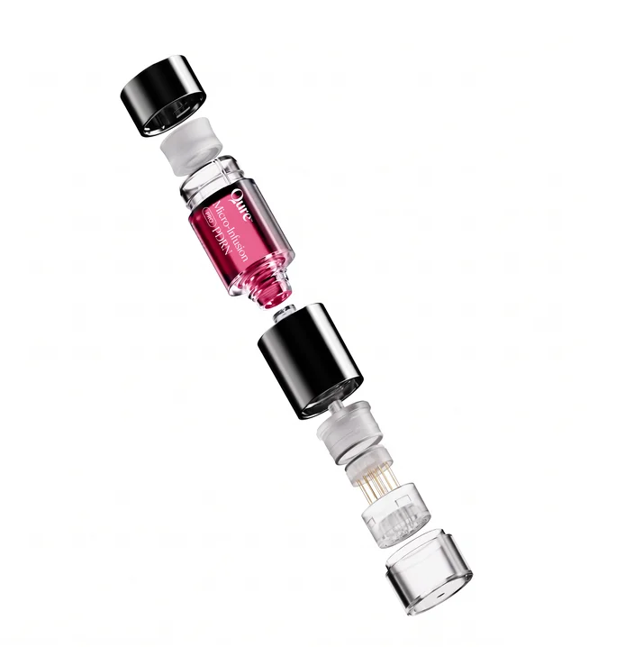
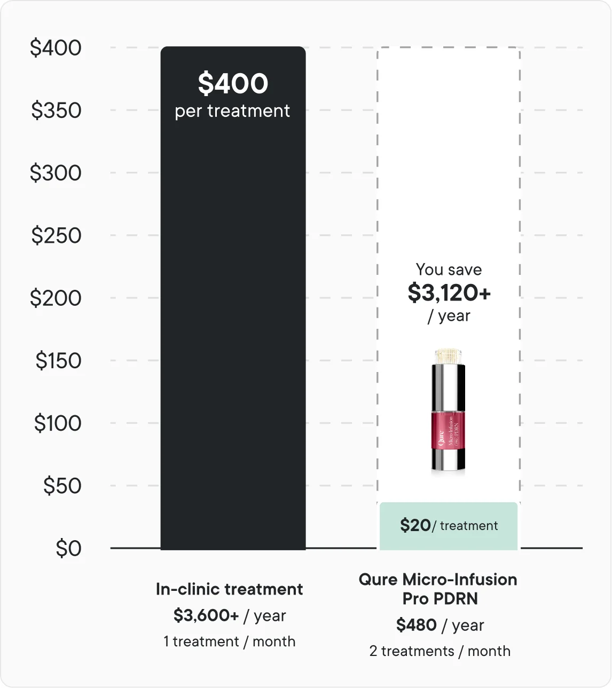
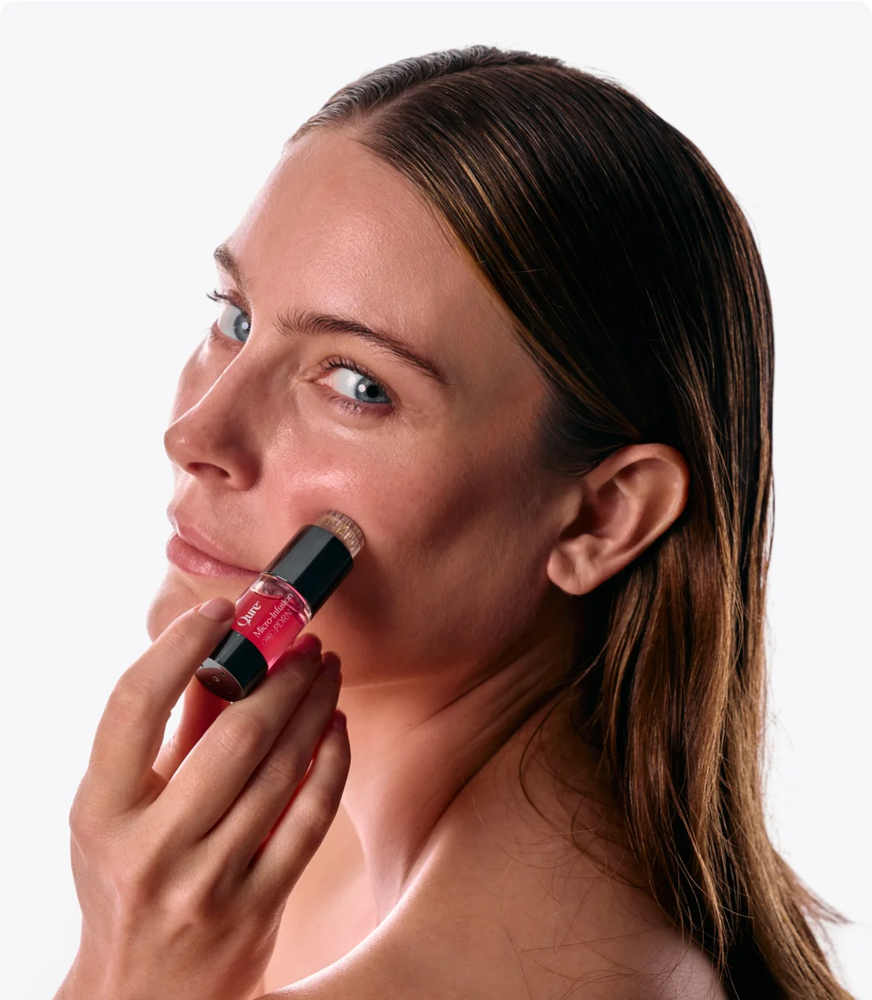
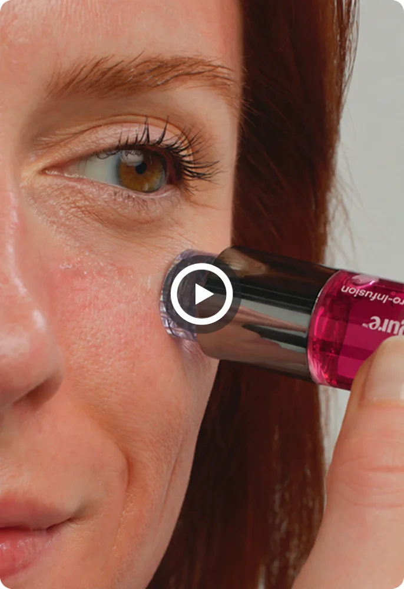
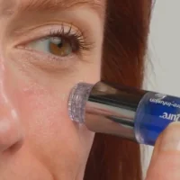
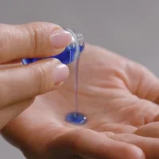

-
Naturally pink from B12, no colorants
Needle head, serum, and pump are sealed together in a single device — no separate vials, no assembly, ever.
-
Helps visibly calm the look of redness
Our patent-pending airless pump delivers consistent serum with every press — no clogging, no leaks, no guesswork.
-
Airless pump for consistent flow
0.5mm, 24-karat gold-plated, sterile microneedles create micro-channels so active ingredients absorb deeper and work harder.
-
Dermatologist-Loved Actives
Formulated with Tranexamic Acid, Niacinamide, and Copper Tripeptide-1 to visibly brighten, smooth, and even out skin tone.
-
Sterile & Single-Use
Each device is EO Sterilized and used once, then disposed of — zero cleanup, minimal risk of infection or irritation.
BRIGHTENING AT-HOME MICRONEEDLING SYSTEM
Your serum shouldn’t stop at the surface. Meet Micro-Infusion Pro PDRN.
Subscribe & Save:
Auto-ships · Cancel anytime · No commitment
Upgrade Your Results
Key Benefits
A next-generation Micro-Infusion treatment, formulated specifically for PDRN delivery, designed to visibly improve the look of skin:
-
Smoother-Looking Texture
Visibly reduced look of fine lines
-
Revitalized, Refreshed Complexion
Skin that looks more resilient and renewed
-
Calmer-Looking Skin
Reduced look of redness and reactivity
-
Hydrated, Supple-Looking Skin
Skin feels calm, hydrated, and comfortable
How It Works
Micro Infusion Pro PDRN (Sodium DNA) is too large to absorb well through the skin's surface on its own. Single-use, gold-plated needles create micro-channels, so the serum has a way in and can go further than a cream alone. Published studies pairing PDRN-type actives with micro-channeling found increased absorption compared to topical-only use.
Full ingredient list
Aqua (Water), Propanediol, Niacinamide, Glycerin, Tranexamic Acid, Myrothamnus Flabellifolia Leaf/Stem Extract, Water, Butylene Glycol, Hydroxyacetophenone, Panthenol, Pentylene Glycol, Sodium DNA, Chrysanthellum Indicum Extract, Beta-Glucan, Ethylhexylglycerin, Allantoin, Sodium Hyaluronate, Hydroxyethylcellulose, Cyanocobalamin
Our favorite treatment that brings you closer to in-office results at home.
Dr. Shah,
Dermatologist
- +50
50+ Board Certified Dermatologists recommend Qure to their patients.
Jump To
Inspired by the Clinic.
Made for Home.
No Set-Up Required
Comes preassembled, with the PDRN serum and needle head sealed in one cartridge. Just remove the cap and start.
Naturally Pink
The pink is the natural color of Vitamin B12 (cyanocobalamin), not a dye. B12 also helps visibly calm the look of redness and reactive-looking skin.
Single-Use & Disposable
Designed for hygienic, single-use treatment. Each needle head is EO-sterilized and intended for one-time use. Made with 80% GRS-certified recycled post-consumer polycarbonate.
Patent-pending design
Our airless pump delivers a consistent amount of serum with every press, designed for smoother flow and less mess.
24K Gold-Plated Needles
0.5mm, 24 karat gold-plated stainless steel needles.

Visible Micro-Infusion results backed by our clinical study
Does it hurt?
What it actually feels like: a light prickle.
Picture Velcro pressed lightly against your skin. That’s the feeling. The 0.5mm needles stamp straight down. No rolling, no dragging, no tugging.
Each stamp creates tiny channels that help your skin take up the serum, for smoother-looking, more radiant skin.
Every treatment starts with a fresh, sterile, single-use needle head, so there’s nothing to worry about on the hygiene side either.
“What I really like about Qure Micro-Infusion is the thought put into safe at-home use. Every treatment starts with a fresh, sterile, single-use needle head. That attention to detail matters.”
Results with QureReal Skin, Real Transformations
Clinic-inspired results. Without the clinic price.

Save over $3,000 a year with Qure Micro-Infusion Pro PDRN.
- 5-minute treatment
- No appointments or travel
- Professional-inspired glow from home
How it works
Qure’s Micro-Infusion PDRN goes where your skin cream can’t...
Its tiny, virtually painless micro-needles create micro-channels at the skin’s surface to support increased serum absorption, helping deliver science-backed active ingredients beyond where everyday topical skincare typically sits.
6 Target Areas - 1 Solution
- Forehead Wrinkles
- Eye Wrinkles
- Smoker’s Wrinkles
- Post acne marks
- Laugh Lines
- Age Spots & Pigmentation marks
PDRN-Powered Formula
Formulated with PDRN (Sodium DNA)

Micro-Infusion Pro PDRN
- Brighter-Looking Skin
- Reduced Look of Redness
- Smoother-Looking Texture
What can it do for your skin
Micro-Infusion Pro PDRN pairs precision micro-stamping with a PDRN (Sodium DNA) serum in one targeted treatment.
Designed to support a smoother, brighter and more refreshed-looking complexion, the formula also helps improve the appearance of uneven tone, visible dark spots and texture.
Skin Concerns: Ideal for dull, uneven-looking skin, visible dark spots, rough texture and skin that looks tired or lacking in radiance.
All Ingredients
Aqua (Water), Propanediol, Niacinamide, Glycerin, Tranexamic Acid, Myrothamnus Flabellifolia Leaf/Stem Extract, Water, Butylene Glycol, Hydroxyacetophenone, Panthenol, Pentylene Glycol, Sodium DNA, Chrysanthellum Indicum Extract, Beta-Glucan, Ethylhexylglycerin, Allantoin, Sodium Hyaluronate, Hydroxyethylcellulose, Cyanocobalamin
Trusted and Recommended by Skin Experts
Backed by skin experts. Designed to target visible signs of aging at home.
FEATURED IN

See how quick and easy it is to use
-
Cleanse
Cleanse your face thoroughly and spritz the Dermal Mist to refresh and prepare your skin further.
-

Treatment
Start at the centre of the face and work your way outward to cover the full face.
-

Aftercare
Once the treatment is complete, pat the remaining serum into skin. The system is designed for single use.
Have questions?
What are the benefits of Micro-Infusion Pro PDRN?
Micro-Infusion Pro PDRN combines our newly redesigned Micro-Infusion Pro device with a brand-new serum formulated with PDRN and Vitamin B12. PDRN (Polydeoxyribonucleotide) is a salmon-derived DNA ingredient popular in Korean skincare and aesthetic treatments for its skin-rejuvenating properties and ability to support healthier-looking, smoother skin. Vitamin B12 helps condition the skin and gives our serum its beautiful, naturally pink hue.
Unlike traditional topical PDRN serums, Micro-Infusion Pro uses 20 ultra-fine, 0.5 mm gold-plated needles to create tiny micro-channels while simultaneously applying the serum directly to the treated skin. Together, this innovative treatment helps:
- Visibly reduce the appearance of fine lines and wrinkles.
- Improve uneven skin texture and smoothness.
- Deeply hydrate for plumper, bouncier-looking skin.
- Support a brighter, more even-looking complexion.
- Leave skin looking refreshed, radiant and revitalised.
How quickly will I see results?
You can expect to wake up to a beautiful, dewy glow as early as the morning after your first treatment, with skin looking more hydrated, refreshed and plump.
Consistency is key! With regular treatments every two weeks, you can expect to see more noticeable improvements over approximately three months, including smoother-looking skin texture, visibly softened fine lines and a plumper, more youthful-looking complexion. Individual results may vary.
Is it painful to use?
Not at all! Micro-Infusion Pro is designed to be virtually painless, making it an easy and comfortable at-home treatment. Its 20 ultra-fine, 0.5 mm gold-plated needles create tiny micro-channels in the skin. You may feel a slight prickling sensation during treatment, but most users find it very comfortable.
Simply use gentle, even pressure when stamping. If you have particularly sensitive skin, we recommend using lighter, gentler stamps for a more comfortable experience.
How often can I use the treatment?
We recommend using Micro-Infusion Pro PDRN once every two weeks for optimal results. Consistency is key to achieving and maintaining visible improvements in your skin’s appearance.
When is the best time to do Micro-Infusion Pro PDRN?
We recommend using Micro-Infusion Pro PDRN every two weeks, preferably at night, to give your skin time to recover overnight. You’ll wake up to skin that looks beautifully hydrated, plump and glowing!
For detailed pre- and post-treatment skincare instructions, please refer to the product manual and our online Micro-Infusion treatment guide.
Can I use it around the eyes and on the neck?
Yes! Micro-Infusion Pro can be used on the face and neck, including carefully around the under-eye area, up to the orbital bone. Use very gentle pressure and only one pass around the eyes. Avoid the eyelids, lash line, broken skin and any areas experiencing irritation.
Can I use a different serum with the Micro-Infusion Pro PDRN device?
Micro-Infusion Pro PDRN comes pre-filled with our specially formulated PDRN serum and is ready to use straight out of the box. There’s no need to add, mix or replace the serum.
We don’t recommend using third-party serums with Micro-Infusion Pro. Every Qure serum is specifically formulated and carefully tested to work with our device, including its needle head and serum delivery system. We assess everything from serum texture and consistency to pumping performance and flow, ensuring smooth, reliable application. We can only guarantee the compatibility and tested safety of our own formulas when used as directed.
If you’re also using our Micro-Infusion Pro 2-in-1 serum, you can alternate between the two treatments every two weeks to enjoy the benefits of both formulas.
How is this different from micro-rolling?
Unlike traditional derma rollers, which use a rolling motion across the skin, Micro-Infusion Pro uses a controlled stamping action to create tiny micro-channels. This allows the specially formulated PDRN serum to be applied during treatment, combining the benefits of micro-infusion with targeted skincare ingredients. The pre-filled design also means there’s no mixing, filling or manual assembly required.